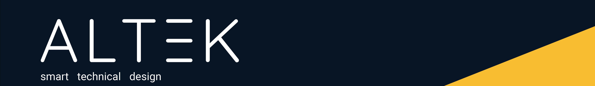

<!DOCTYPE html>
<html lang="de">
<head>
    <meta charset="UTF-8">
    <meta name="viewport" content="width=device-width, initial-scale=1.0">
    <title>Smart Kiosk x ALTEK</title>
    <style>
        body {
            font-family: Arial, sans-serif;
            margin: 0;
            padding: 0;
            min-height: 100vh;
            background-image: url('Leuchtturm.png');
            background-size: cover;
            background-position: center;
            background-repeat: no-repeat;
        }

        header img {
            width: 100%;
            height: auto;
            display: block;
            margin: 0;
        }

        nav {
            display: flex;
            justify-content: center;
            background-color: #000000; /* Schwarz */
            padding: 1rem;
            flex-wrap: wrap;
        }

        nav a {
            color: #fff; /* Weiß */
            text-decoration: none;
            margin: 0.5rem 1rem;
            font-size: 1rem;
        }

        nav a:hover {
            text-decoration: underline;
        }

        .content {
            background-color: #fff;
            padding: 2rem;
            max-width: 800px;
            margin: 2rem auto;
            box-shadow: 0px 0px 20px rgba(0, 0, 0, 0.1);
            border-radius: 8px;
        }

        h2 {
            color: #00274d;
            text-align: center;
        }

        footer {
            text-align: center;
            padding: 1rem;
            background-color: #000;
            color: #fff;
            width: 100%;
        }

        img {
            max-width: 100%;
            height: auto;
        }
        @media (max-width: 768px) {
            .content {
                padding: 1rem;
                margin: 1rem;
            }

            nav a {
                font-size: 0.9rem;
                margin: 0.3rem 0.5rem;
            }

            .video-container {
                flex-direction: column;
            }

            iframe {
                height: auto;
            }
        }

        @media (max-width: 480px) {
            .content {
                padding: 1rem;
                margin: 1rem;
            }

            nav {
                flex-direction: column;
                align-items: center;
            }

            nav a {
                margin: 0.3rem 0;
                font-size: 0.9rem;
            }
        }
    </style>
</head>


</body>
</html>

    </style>
</head>
<body>

    <header>
        
    </header>
    
    <nav>
        <a href="#projektvorstellung">Projektvorstellung</a>
        <a href="#planung-umgebung">Planung & Umgebung</a>
        <a href="#design-thinking">Design Thinking</a>
        <a href="#ausblick">Ausblick</a>
        <a href="#video">Videos</a>
        <a href="#kontakt">Kontakt</a>
    </nav>
    
    <!-- Hintergrundbild erst ab hier -->
    <div class="background-container">
        <div class="content">
            <main>
                <!-- Projektvorstellung -->
                <section id="projektvorstellung">
                    <h2>Der Smart Kiosk</h2>
                    <p>Der Smart Kiosk in der Nürnberger Fußgängerzone bietet obdachlosen Jugendlichen eine Anlaufstelle für Beratung und soziale Teilhabe. Unterstützt vom Bayerischen Staatsministerium und der Stiftung Obdachlosenhilfe Bayern, fördert er digitale Teilhabe und sozialen Austausch.</p>
                    
                    <h3>Stakeholder</h3>
                    <p>Der Smart Kiosk wird vom Don Bosco Jugendwerk Nürnberg betrieben. Diese Einrichtung hilft jungen Menschen zwischen 15 und 25 Jahren bei der gesellschaftlichen Eingliederung.</p>
                    
                    <h3>Unser Ziel</h3>
                    <p>Unser Ziel ist es, den Smart Kiosk technisch zu ergänzen, um die Bedürfnisse der Zielgruppe besser zu erfüllen. Dafür nutzen wir den Human-Centered Design Prozess, um eine benutzerzentrierte Lösung zu entwickeln.</p>
                </section>
    
                <!-- Planung und Umgebung -->
                <section id="planung-umgebung">
                    <h2>Planung & Umgebung</h2>
                    <p>In der Planungsphase legten wir Methoden, Ressourcen und Zuständigkeiten fest, um effektiv als Team zu arbeiten. Ein Kick-off-Treffen am Smart Kiosk gab uns Einblicke in das Projektsetup. Im November sammelten wir weitere Informationen zur Zielgruppe in einem Treffen mit Don Bosco-Mitarbeitern.</p>
                    
                    <p>Erkenntnisse aus dem Vorgänger-Projekt "SiWo" halfen uns, unser Projekt zu gestalten. Wir gründeten die fiktive Firma "ALTEK", um ein Corporate Design für unser Projekt zu entwickeln.</p>
                </section>
    
                <!-- Design Thinking Prozess -->
                <section id="design-thinking">
                    <h2>Design Thinking Prozess</h2>
                    <p>Der Design Thinking Prozess ermöglichte uns, die Bedürfnisse der Nutzer besser zu verstehen und kreative Lösungen zu entwickeln, die im Human-Centered Design Prozess angewendet werden.</p>
                </section>
    
                <!-- Ausblick -->
                <section id="ausblick">
                    <h2>Ausblick</h2>
                    <p>Zu Beginn des zweiten Projektabschnitts werden wir unsere bisherigen Ergebnisse mit den Stakeholdern von Don Bosco besprechen und unsere Nutzungsanforderungen weiter verfeinern. Nach dem Festlegen der Anforderungen beginnen wir mit der Entwicklung von Gestaltungslösungen, um unsere Designideen weiterzuentwickeln und Feedback von Stakeholdern einzuholen.</p>
                </section>
    
                <!-- Abschnitt mit zwei Videos nebeneinander -->
                <section id="video">
                    <h2>Schauen Sie sich unsere Videos an</h2>
                    <div class="video-container">
                        <div class="video-item">
                            <h3>Berateransicht</h3>
                            <iframe src="https://www.youtube.com/embed/IHR_video_url1" allowfullscreen></iframe>
                        </div>
                        <div class="video-item">
                            <h3>Klientenansicht</h3>
                            <iframe src="https://www.youtube.com/embed/IHR_video_url2" allowfullscreen></iframe>
                        </div>
                    </div>
                </section>
    
                <!-- Kontakt -->
                <section id="kontakt">
                    <h2>Kontaktieren Sie uns</h2>
                    <form action="send_email.php" method="post" style="position: relative;">
                        <div>
                            <label for="name">Name:</label><br>
                            <input type="text" id="name" name="name" required style="width: 100%;"><br><br>
    
                            <label for="email">E-Mail:</label><br>
                            <input type="email" id="email" name="email" required style="width: 100%;"><br><br>
    
                            <label for="message">Nachricht:</label><br>
                            <textarea id="message" name="message" rows="5" required style="width: 100%;"></textarea><br><br>
    
                            <input type="submit" value="Senden" style="margin-right: 80px;">
                        </div>
                        <div style="position: absolute; right: 0; bottom: 0; display: flex; align-items: center;">
                            <a href="https://www.instagram.com/altek_nuernberg" target="_blank" style="display: flex; align-items: center; text-decoration: none; color: black;">
                                
                                <span>altek_nuernberg</span>
                            </a>
                        </div>
                    </form>
                </section>
            </main>
        </div>
    </div>
    
    <footer>
        <p>&copy; 2024 Smart Kiosk. Alle Rechte vorbehalten.</p>
    </footer>
</body>
</html>
